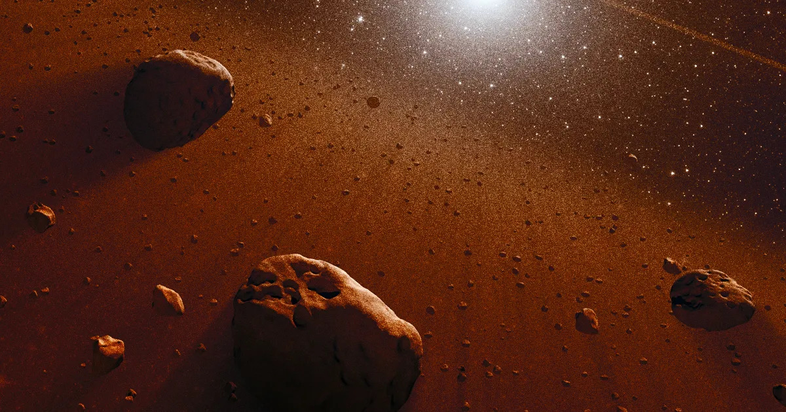

For thousands of years, civilization only knew of five planets. Over time, they realized Earth was a planet too, and then came Uranus and Neptune. But by the 20th century, our technological advances allowed us to discover far more celestial objects in the solar system, and at a much quicker pace. That led to the discovery of Pluto in 1930 and its inauguration as the ninth planet. Sounds amazing, right? One more planet to add to the family! Pluto was great, and everyone loved it. It had all the spotlight and was the new kid on the block. What could go wrong?
Well, 2005 came around, and astronomers discovered the 10th planet, Eris! That… was not as exciting for Pluto, though, because it was Eris's discovery that ultimately led to Pluto's demise. See, after Eris's discovery, astronomers began to question what really classifies a planet. Back then, there was no definition. If it orbited the Sun and seemed “planet-like,” it was a planet, but Eris raised some eyebrows. As time went on, more and more planets were being discovered, and astronomers had to draw the line. But what was going to be the line? To determine that, they met in Prague for the 26th International Astronomical Union assembly to settle the matter. The following are the rules they agreed on.
This one is the most general and obvious criterion of the three: a planet must orbit the Sun. Mercury, Venus, Earth, Mars, Jupiter, Saturn, Uranus, Neptune, and even Pluto qualify for this requirement. This one is so general that if it were the only criterion, then almost all the asteroids, comets, and celestial bodies in the solar system would be planets. Not just that, but some of our satellites would become planets as well. Regardless, this is one of the most crucial criteria because it ensures the object is gravitationally bound to the Sun as part of our solar system rather than orbiting another body. All the moons orbiting the real planets are cut out, but Pluto survives this one.

This is where most of the celestial bodies in our solar system are knocked out of the running for planetary status: a planet must be large enough that its gravitational field can pull it into a near-perfect sphere. Now, all the comets and nearly all the asteroids are knocked out, leaving us with only a few select candidates. The leftovers haven't made it yet, but they are some of the largest objects in our solar system, ranging from Ceres, the largest object in the asteroid belt, to Jupiter. But again, Pluto survives this one.
This one is the requirement that most people don't understand: a planet must have cleared its neighborhood. Neighborhood!? What kind of neighborhoods are in space? Well, when a planet forms in the early solar system, it starts off as gas and dust that slowly clump together and grow larger, gaining a stronger gravitational field. As time goes on, the planet's gravity causes everything in its path to either be absorbed or flung out of the way, leaving its orbit mostly empty of other large objects. This is where Pluto falls short; it's not large enough to clear its orbital path of other debris. As a matter of fact, Pluto is in the Kuiper Belt, a region filled with countless icy bodies that share its orbit.
Sorry, Pluto; it turns out you were an imposter all along and that you're not cut out for the prestigious planetary status. But hey, at least you carved out your own category. Anyway, with Pluto's demotion out of the way, stay curious and planetic.